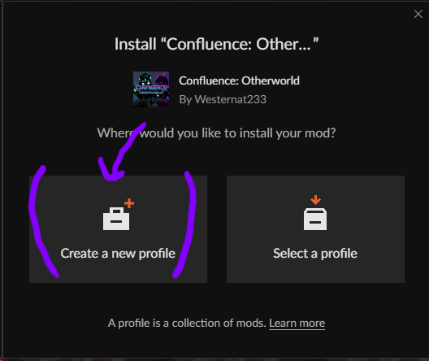
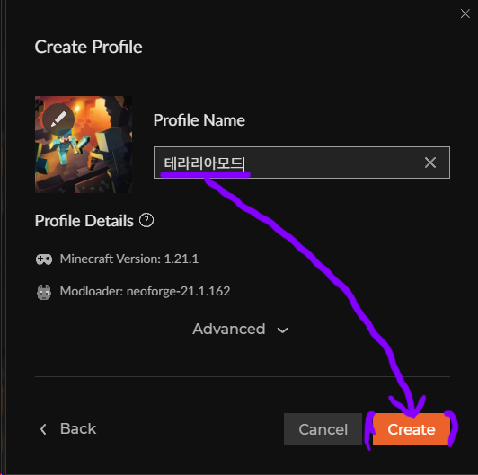
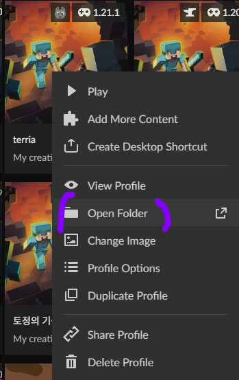

토정 마인크래프트 시청자 참가 가이드
1. 커스포지 다운로드
- 커스포지 공식 사이트에 접속
- 중앙 Download on Overwolf 클릭
- 설치 파일 실행 후 설치 완료
- 설치 후 CurseForge 실행 → Minecraft 클릭

커스포지 다운로드 예시
2. 테라리아 모드(Confluence: Otherworld) 설치하기
- 커스포지 테라리아 모드 사이트에 접속
- 우측 상단 Install 클릭
- Create a new profile 클릭
- 이름 지정 후 Create 클릭
테라리아 모드 설치 1

테라리아 모드 설치 2

테라리아 모드 설치 2
3. 모드 한글패치하기
- 디스코드에서 #시참 ConfluenceOtherworld-1.0.5-hotfix.jar 다운로드하기
- 2번에서 설치한 테라리아 모드 프로필 우클릭 - Open Folder 클릭
- 디스코드에서 다운로드 받은 파일을 mods 폴더에 넣기

모드 한글패치
4. 편의성 모드 추가 (미니맵, 조합법 검색)
- 디스코드에서 #시참 jei-1.21.1-neoforge-19.21.0.247.jar, Xaeros_Minimap_25.2.0_NeoForge_1.21.jar 다운로드하기
- 2번에서 설치한 테라리아 모드 프로필 우클릭 - Open Folder 클릭
- 디스코드에서 다운로드 받은 파일을 mods 폴더에 넣기
5. 실행
- 모드가 추가된 프로파일을 선택 후 Play 버튼 클릭하여 게임 실행
- 서버 주소 : 마크.토정.서버.한국:25565
Play 버튼을 눌러 마인크래프트 실행